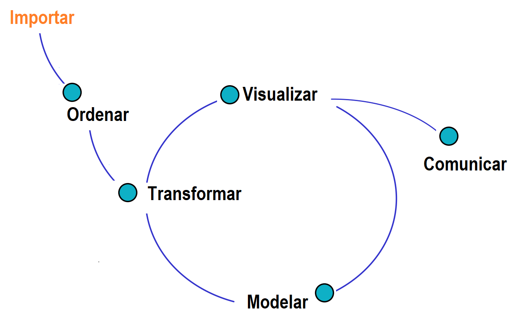

La importación de datos depende del formato y de la fuente que genera los datos. Es el primer paso del análisis: si los datos entran mal a R, todo lo que sigue queda mal. Esta página presenta el ciclo del análisis de datos y cómo importar los formatos más usados, desde archivos, paquetes e internet.
Los ejemplos usan archivos de la carpeta data/ejemplos
de este proyecto, con una muestra de 200 viviendas de
vivienda_faltantes: CSV, CSV de Excel, Excel, RDS, SPSS y JSON. Los bloques de código se
ejecutan en orden.
En el ciclo del análisis de datos se llevan a cabo estas actividades:
La siguiente figura presenta el flujo de estas actividades. Transformar, visualizar y modelar forman un ciclo, porque lo que se aprende en una etapa puede llevar a repetir las otras.

Ciclo del análisis de los datos
Conviene trabajar dentro de un proyecto de RStudio y
guardar los archivos en una carpeta llamada data. Así, el
código usa una ruta relativa, que funciona en cualquier
computador:
| Ruta | Ejemplo | ¿Sirve en otro equipo? |
|---|---|---|
| Relativa | data/viviendas.csv |
Sí |
| Absoluta | C:/Users/Ana/viviendas.csv |
No |
La función file.choose() abre una ventana para buscar un
archivo, pero devuelve una ruta absoluta. Sirve para explorar, no para
un análisis que otras personas vayan a repetir.
RStudio tiene un asistente en File > Import Dataset. Muestra una vista previa y genera el código, que conviene copiar al script para poder repetir la importación.
| Formato | Ruta en File > Import Dataset | Descripción |
|---|---|---|
.txt, .csv |
From Text | Texto separado por un carácter |
.xlsx |
From Excel | Archivo de Excel |
.sav |
From SPSS | Archivo de SPSS |
.sas7bdat |
From SAS | Archivo de SAS |
.dta |
From Stata | Archivo de Stata |
| Formato | Paquete | Función |
|---|---|---|
.csv |
readr |
read_csv() o read_csv2() |
.csv |
Base de R | read.csv() o read.csv2() |
.txt |
readr |
read_delim() |
.xlsx |
readxl |
read_excel() |
.rds |
Base de R | readRDS() |
.json |
jsonlite |
fromJSON() |
.sav |
haven |
read_sav() |
.dta |
haven |
read_dta() |
.sas7bdat |
haven |
read_sas() |
Estos paquetes se instalan una sola vez:
install.packages(c("readr", "readxl", "haven", "jsonlite"))Un archivo CSV es un texto con los valores separados por un carácter. Hay dos variantes:
| Variante | Separa columnas con | Decimal | Función |
|---|---|---|---|
| Inglesa | Coma | Punto | read_csv() |
| Excel en español | Punto y coma | Coma | read_csv2() |
Excel configurado en español suele guardar la segunda variante, y por eso es común en Colombia. Si se usa la función equivocada, todo queda en una sola columna.
library(readr)
viviendas <- read_csv("data/ejemplos/viviendas.csv", show_col_types = FALSE)
dim(viviendas)[1] 200 7viviendas2 <- read_csv2("data/ejemplos/viviendas_excel.csv", show_col_types = FALSE)
dim(viviendas2)[1] 200 7Si los faltantes están escritos con un código, como -99
o NA, el argumento na los convierte:
read_csv(archivo, na = c("", "NA", "-99")).
read_excel() recibe el archivo y la hoja, por nombre o
número. La función excel_sheets() muestra las hojas que
tiene.
library(readxl)
excel_sheets("data/ejemplos/viviendas.xlsx")[1] "viviendas" "notas" viviendas3 <- read_excel("data/ejemplos/viviendas.xlsx", sheet = "viviendas")
dim(viviendas3)[1] 200 7RDS es el formato propio de R: guarda
un objeto con sus tipos de variables, y ocupa poco espacio. Se guarda
con saveRDS() y se lee con readRDS().
viviendas4 <- readRDS("data/ejemplos/viviendas.rds")
dim(viviendas4)[1] 200 7library(haven)
library(jsonlite)
viviendas5 <- read_sav("data/ejemplos/viviendas.sav")
dim(viviendas5)[1] 200 7viviendas6 <- fromJSON("data/ejemplos/viviendas.json")
dim(viviendas6)[1] 200 7Muchos paquetes incluyen bases de datos. Se cargan con
data(), y data(package = "datasets") lista las
que trae R.
data("iris")
dim(iris)[1] 150 5library(paqueteMETODOS)
data("CarreraLuz22")Si un archivo tiene una dirección web, se lee igual que un archivo local, cambiando la ruta por la dirección.
Los portales que usan la tecnología Socrata, como Datos Abiertos Colombia, ofrecen
una API: una dirección que entrega los datos en un
formato definido. Para pedir un CSV se agrega .csv a la
dirección del conjunto de datos (Socrata, formatos). Si
no se indica $limit, entrega 1000 registros (Socrata,
límites).
library(readr)
direccion <- "https://www.datos.gov.co/resource/gt2j-8ykr.csv?$limit=5000"
casos <- read_csv(direccion, show_col_types = FALSE)El paquete RSocrata se usaba para esto, pero fue
retirado de CRAN en abril de 2025 (CRAN).
Algunas API piden un token, que es una clave
personal. Nunca se escribe en el código ni se publica. Se guarda en el
archivo .Renviron, con una línea como
TOKEN_DATOS=su_clave, y se lee con
Sys.getenv("TOKEN_DATOS"). Si un token queda publicado, hay
que revocarlo y crear uno nuevo.
Después de importar, se revisa que los datos hayan entrado bien:
dim(viviendas) # filas y columnas[1] 200 7str(viviendas2) # tipo de cada variablespc_tbl_ [200 × 7] (S3: spec_tbl_df/tbl_df/tbl/data.frame)
$ id : num [1:200] 74 78 157 245 257 278 279 306 342 387 ...
$ zona : chr [1:200] "Zona Oriente" "Zona Oriente" "Zona Norte" "Zona Norte" ...
$ estrato : num [1:200] 3 3 3 3 3 3 3 3 3 3 ...
$ preciom : num [1:200] 180 58 180 190 370 95 76 127 120 99 ...
$ areaconst: num [1:200] 136 50 114 90 215 46 49 60 75 58 ...
$ banios : num [1:200] 1 1 2 4 6 1 1 2 1 1 ...
$ parquea : num [1:200] NA 1 1 NA 1 1 1 NA NA NA ...
- attr(*, "spec")=
.. cols(
.. id = col_double(),
.. zona = col_character(),
.. estrato = col_double(),
.. preciom = col_double(),
.. areaconst = col_double(),
.. banios = col_double(),
.. parquea = col_double()
.. )
- attr(*, "problems")=<externalptr> head(viviendas, 3) # primeras filas# A tibble: 3 × 7
id zona estrato preciom areaconst banios parquea
<dbl> <chr> <dbl> <dbl> <dbl> <dbl> <dbl>
1 74 Zona Oriente 3 180 136 1 NA
2 78 Zona Oriente 3 58 50 1 1
3 157 Zona Norte 3 180 114 2 1colSums(is.na(viviendas)) # datos faltantes por variable id zona estrato preciom areaconst banios parquea
0 0 0 0 0 0 31 Hay que comprobar el número de filas y columnas, que las variables numéricas no hayan quedado como texto y que los faltantes coincidan con lo esperado.
| Problema | Causa | Solución |
|---|---|---|
cannot open the connection |
La ruta está mal o el proyecto no está abierto | Abrir el proyecto y revisar la ruta |
| Todo queda en una sola columna | El separador no coincide | Usar read_csv2() o
read_delim() |
| Los números quedan como texto | Hay decimales con coma o símbolos | Usar read_csv2() o revisar el archivo |
| Las tildes se ven mal | La codificación no coincide | Indicar la codificación con locale() |
could not find function "read_excel" |
No se cargó el paquete | Ejecutar library(readxl) |
| Solo llegan 1000 filas desde la API | Es el límite por defecto | Agregar $limit a la dirección |
Aviso One or more parsing issues |
Algunos valores no coinciden con el tipo de su columna | Revisar con problems(datos) |
| Un token queda en un repositorio público | Se escribió en el código | Revocarlo y usar .Renviron |
Abrió un archivo en el Bloc de notas y la primera línea dice
id;zona;estrato;preciom, y un precio aparece como
250,5. ¿Qué función usa?
read_csv2(), porque las columnas se separan con punto y
coma, y el decimal es una coma.
Importe viviendas.xlsx y calcule cuántas viviendas tiene
y cuántos datos faltan en parquea.
library(readxl)
datos <- read_excel("data/ejemplos/viviendas.xlsx", sheet = 1)
nrow(datos)[1] 200sum(is.na(datos$parquea))[1] 31Guarde viviendas en un archivo RDS, léalo
de nuevo y compruebe que tiene las mismas dimensiones. Use un archivo
temporal para no llenar su carpeta.
archivo <- tempfile(fileext = ".rds")
saveRDS(viviendas, archivo)
copia <- readRDS(archivo)
identical(dim(copia), dim(viviendas))[1] TRUEÚltima revisión: 5 de noviembre de 2026.